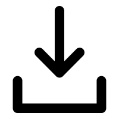

Explanation
Here for most people, the preference for 180°-motion is disrupted, and the unstable percept is restored. This is explained by the fact that the rings can no longer collide into each other thanks to the gaps.
This also shows that the proximity of the rings cannot explain the effect. The visual system indeed incorporates solidity to guide processing of object motions!
Separated
Overlapping
Gapped

Home